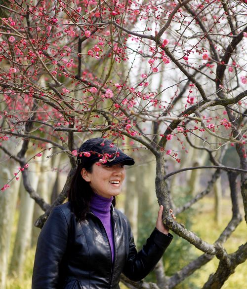
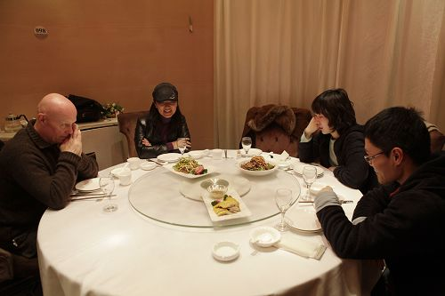
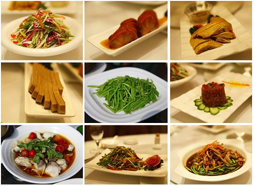

Archives : 2011-02
有朋自远方来 @ Feb 24, 2011
这是第二次见JENNY，第一次在2009年深秋的布拉格。她从英国飞到布拉格，我从南京前往，在布拉格的古城里相见。若是一对男女，为这样的浪漫多少也会擦出些火花吧。给我印象深刻的是她爽朗的笑声，双子座的开朗健谈。有她在，怎会有冷场的境遇。
为见她，比平时上班起得早，可还是迟到了。。。我这拖拉的习惯什么时候才能消失？到酒店院子里不见其人，打电话给总台：“我要找一位英国男人和一位中国女人。”问问在我身边笑起来，我自己也觉得有趣，我怎么就那么严肃又认真地说出了这样一句话。
边走边聊，有讲不完的话题，哪还有心思琢磨拍照的事儿，笑不完讲不完。Steve一直默默跟在我们身后，或听音乐或拍照，总是让女士们先行，一副英国绅士做派。
好多年没去梅花山，居然要向路人打听。春天的阳光照在身上暖洋洋的，心情好过天天挣扎在办公桌前。无心赏景，只是和喜欢的人儿一起走走，就很快乐。在国际青年旅馆吃完午饭，在中山陵陵寝前几百个石阶上四人比赛，在Steve一路领先下结束。有人说：西方人的业余时间热衷于健身、户外运动，中国人的剩余时间喜于坐在麻将桌前。Jenny夫妇仍然坚持到健身房，这对我触动很大，俺们大部分的剩余时间多用在了睡觉、上网、吃饭上了。向坚持健身的先生女士们致敬。
在问问家的下午茶，有趣，这里先不写，留点念想~下午茶时间，我乐坏了，也更加喜欢外外。大伙儿都是爱狗之人，晚上又一起到我家去看Luke和土豆。这一天过得很棒，好久没那么开心了。
悄悄尾随其后的春天。

这种颜色的梅花，我最爱。

她在丛中笑。

童话世界里的问问。

赏梅当如此悠闲，找块高地坐下，对面一片花海。
“人低一点，梅花就是云朵，人高一点，就似在云间游荡。”（by问问）

在国际青年旅馆用午餐。


晚饭订了个包间，之前有人在这家酒店请吃饭，对这里的菜品印象极好。但这次我被自己点的“凉拌五毒”给折磨了，里面有香菜、芹菜和洋葱，全是生的，吃下几秒钟就全吐出来了。泪流满面地从卫生间回来。这些菜平时都不爱吃，总觉得香菜有股子花大姐的气味。
以及，早晨接问问，见胡子拉茬的wanze骑着自行车驮着问问慢悠悠地出来，下午再见他，整张脸那个干净啊，仔细一瞧，胡子全没了，还是觉得有胡子的他更范儿。

考虑到西方人的口味，特地点了鹅肝冻，还有黑椒牛仔骨。Steve却最爱现榨的花生核桃汁。Jenny夫妇吃鸡肉会将鸡皮撕掉，除了英国人其他国家有这样的习惯吗？（要知道我妈妈一个女同事特爱吃鸡皮鸭皮，据说对皮肤好。）Steve说：“这是我在中国吃的最好的一次餐。”恩，得意一下总可以吧。

留影一张。我想我们还会重游一次春天，当阳春三月来临时。

家庭收支记帐 @ Feb 21, 2011
目前我家每日家庭支出均为手工记帐，昨天央视抽查北京两户人家2009年和2010年家庭收支情况，一户退休老爷爷居然用的是某电脑软件记帐方式。。。小受刺激，本周内俺家也必须鸟枪换炮用上软件才好。不过，不能每次消费都要打开电脑记录也挺麻烦的，每个月用软件记录一次，每天开销仍然保持手工记录。
分享央视唯一推荐的家庭/个人收支记帐软件，是否跑得过CPI，财智6让你一目了然。
与超大橙子的相遇 @ Feb 16, 2011
晚饭后翻箱拿橙子准备切了吃，翻出一个超大的橙子，跟一只小甜瓜似的，在切割它之前还是为这次相遇拍照留念吧，以后未必能遇到这种体型的橙子了。


奶酪葡萄 @ Feb 15, 2011
樱桃妈妈做的奶酪葡萄，看着就很有食欲，这得多花时间啊， 一颗一颗的弄。没时间没关系，一定得有爱心，才能这么准备着等待爱人回家。除了技艺得学习之外，还得有这么个你特别爱的人，有爱的生活比蜜甜。樱桃妈妈真是太能干了，让别的女人怎么活啊？恨不得立马泪奔到西餐烹饪学校去学习。
奶酪葡萄我先收藏着，日后尝试做一次。

DRESS BLOG @ Feb 15, 2011
上周五姑娘们聚餐，前一天晚上想着还是脱下这件皮草背心赴宴吧。饭后，斗胆提问：“你们说我们穿的皮鞋背的皮包，以及那些皮具用的都是动物的皮，和皮草有什么本质上的区别吗？”就目前简陋的信息而言，制作皮草的动物也是专门饲养专供皮草所用，和专供人们吃的牛羊猪肉一样的性质。家庭作坊与专业皮草饲养屠宰方式会有不同，比如电击。尤其今年，穿皮草似乎心理压力很大，但买了不穿更是浪费。另外，拒绝购买皮草的结果是，将断送一大群人的饭碗。此话题，仅供讨论。

过日子。 @ Feb 13, 2011
南京今天小雪。
春节后第一个周末只休息一天，中午起床，烧饭。下午外出买菜买花，到家的时候已是傍晚。家里所有的花都换上新鲜的粉色玫瑰和三色康乃馨，吃饭的时候心里嘀咕：“一日三餐在家里吃，干净卫生，家里比外面温暖，谁要是不喜欢这样过日子，一定是脑子短路了。”女人要象照顾自己摸样那样，照顾好家，才能算是真正意义上的女人。
这次买了五束鲜花，家里瓶瓶罐罐都插满了，仿佛春天已经到来。


最大盆的大葱这会儿疯了似的开着花，让人着急，能不能慢一点慢一点呢？

今天还完成了一项伟大的工程，给豆浆原料们配了瓶子。之前豆子们都在原装袋里，每天拿取很不方便。现在问题解决了。

过节 @ Feb 07, 2011
春节，整个城市空落落的，人迹罕见，马路变得宽敞，不见车水马龙。但，这城市还是换了种方式热闹起来，南京被鞭炮炸了个底朝天。我家年初一早晨只放了一挂鞭炮，其他时候待夜晚降临，俺们就站在阳台上看邻居们放烟花，看客也一样快乐。

家里的水仙花今天盛开了，养它毫无技术含量，可是挺让人高兴的。长枝的红白玫瑰年前买回来插水里养，节日期间花苞一点点盛开，花朵逐渐饱满，令人赏心悦目。
享受无所事事的乐趣，除了必须的人情交往，其他时候尽量宅着，这是最好的放松方式。